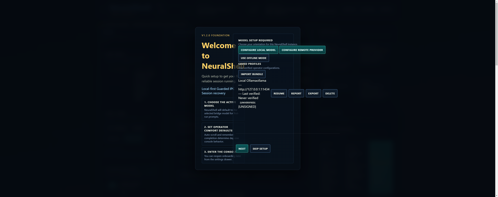

Verification Proof
Every claim NeuralShell makes about hardware binding, offline execution, and session recovery is backed by reproducible test scenarios. Download and run them yourself.
↓ proof-manifest.json · v2.1.29Session Trust Scenarios
Seven scenarios covering the full trust state machine — verified match, offline lock, hardware drift, missing secret, and signature tampering. Each is reproducible from a clean install.

Hardware fingerprint matches stored value. Session is active and trusted. This is the baseline passing state.
stored: 7cebc682…f48832e · live: 7cebc682…f48832e · match: true

Hardware matches but session is explicitly set to off. Demonstrates that session state is independent of hardware verification.

Stored fingerprint no longer matches live hardware. Session is flagged as drifted. Recovery requires re-verification on the original device.

Session encryption key is absent. Session is blocked and unrecoverable without the original device and backup. Validates that there is no cloud fallback path.

Session signature has been altered. Integrity check fails immediately. Demonstrates tamper detection independent of hardware fingerprint.
Network is disconnected and session is in locked state. Confirms that offline lock behaviour is deterministic and does not silently degrade.

Session data is structurally corrupt or unrecognised. Session is rejected outright. Validates defensive handling of malformed state.
First Launch → Reinstall → Recovery
Proof that sessions survive a full uninstall and reinstall cycle on the same machine, and fail cleanly on a different device.



Verify, Switch, Repair, Disconnect
Four core operator actions recorded as proof artifacts. Each is a discrete, auditable action with a logged outcome.
Run It Yourself
Download NeuralShell, install it, and walk through the same scenarios. Every result shown here is reproducible on your own machine.
Download v2.1.29 Read the Docs